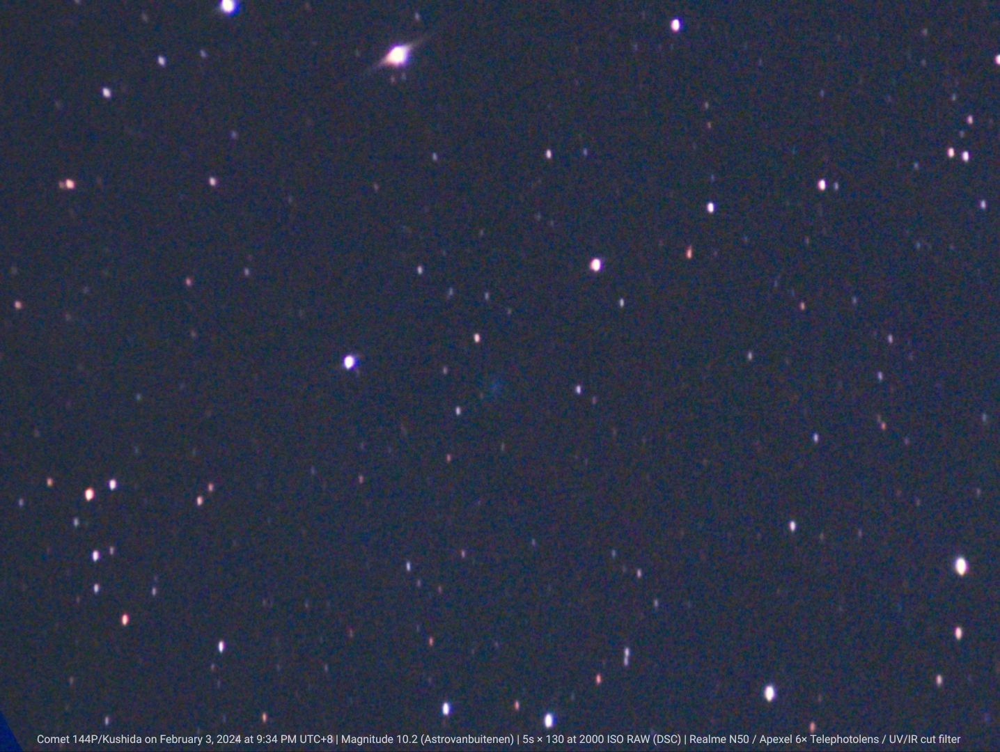
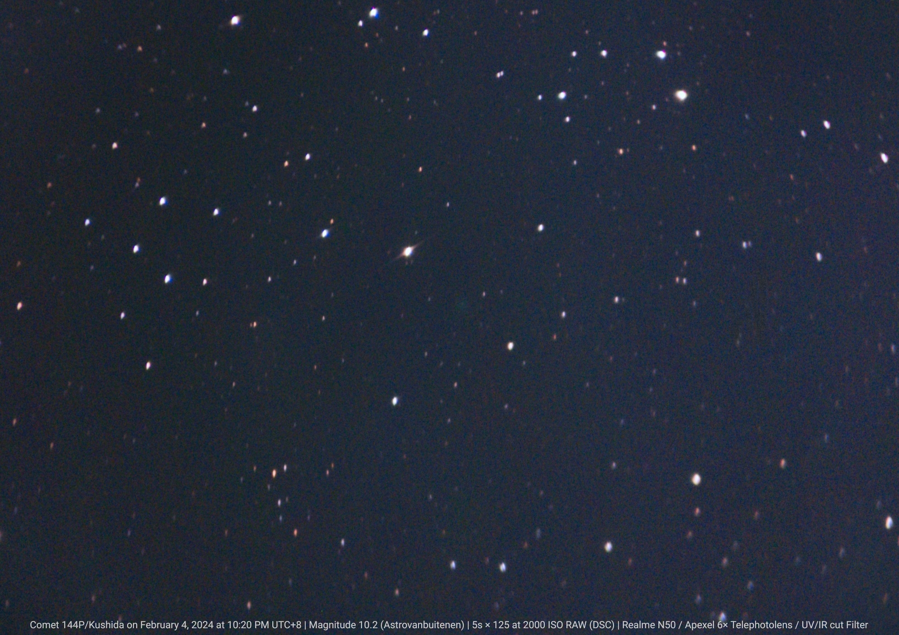
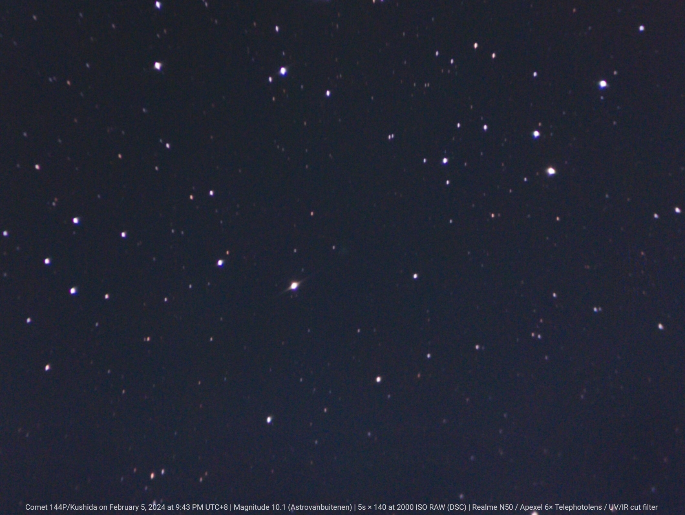
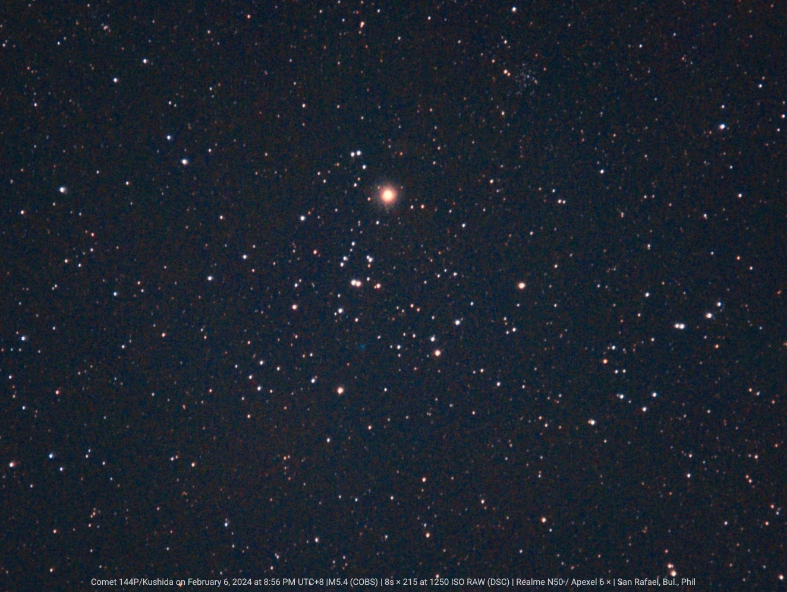

January 29, 2024

January 30, 2024

January 31, 2024

February 3, 2024

February 4, 2024

February 5, 2024

February 6, 2024
144P/Kushida is a periodic comet discovered in January, 1994, by Yoshio Kushida at the Yatsugatake South Base Observatory in Japan. This was the first comet discovery of 1994 and his second discovery within a month. It last came to perihelion on 25 January 2024, and brightened to about magnitude 10.
Images from January 2024 to February 2024
January 29, 2024
January 30, 2024
January 31, 2024
February 3, 2024
February 4, 2024
February 5, 2024
February 6, 2024